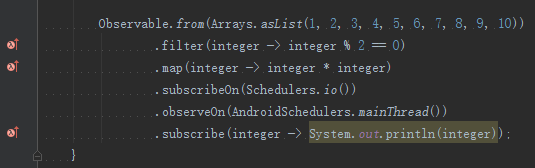

Android N Preview
Google前段时间发布了Android N Preview，对于开发者来说，特别重要的一点是开始支持Java8里面的一些新特性了。N Preview目前支持的特性也非常有限，主要有下列几项，具体参考官方介绍和这篇翻译：在 Android N 预览版中使用 Java 8 的新特性：
- Lambda表达式
- 默认和静态接口方法
- Stream
- 重复注解
- Method References
Lambda表达式
来看看我们比较关注的一点：Lambda表达式，引用官方的一句话：
Android N 的 Lambda 表达式的实现基于匿名类。这种方法使表达式可以向后兼容，并可以在早期版本的 Android 上执行。
看到这里，我相信大家已经兴奋了，这段话啥意思呢？也就是在Android N之前的版本中，我们终于可以不依赖gradle-retrolambda和retrolambda这两个非官方的兼容库了。终于有了官方的Lambda表达式支持了，此处应有掌声，啪啪啪啪啪啪。
实现
下面就看看如何实现，步骤也非常简单，主要是更新软件和引入Jack编译工具并修改gradle脚本：
Step1
安装jdk8和下载最新的AS2.1稳定版，JDK location选jdk8的路径。Step2
更新Build-tools至最新的24.0.0 rc3版本（因为Jack工具需要用到这个最新的rc版）Step3
启用Java8特性和Jack工具编译，修改build.gradle脚本1234567891011121314151617181920android {compileSdkVersion 23buildToolsVersion "24.0.0 rc3"...defaultConfig {minSdkVersion 15targetSdkVersion 23versionCode 1versionName "1.0"jackOptions {enabled true}}...compileOptions {sourceCompatibility JavaVersion.VERSION_1_8targetCompatibility JavaVersion.VERSION_1_8}}
（注意：若我们只需要使用Lambda特性，compileSdkVersion 和 targetSdkVersion 可以设为 23 或更小的值）
- Step4
执行Gradle Sync Project，稍等AS初始化坏境及依赖，就可以开始写Lambda表达式了。Google原生支持的，而且兼容旧版本，各种酸爽有木有？下面是一个Rxjava的例子：

可以看到左边的那条bar已经有红色的Lambda标记，证明已经配置成功。终于可以用上Google官方的Lambda表达式兼容支持了，想想内心有点小激动呢，嘿嘿。Have fun~！